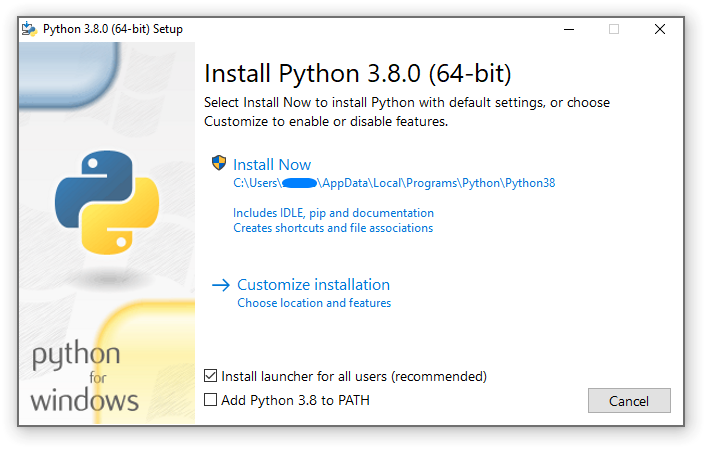
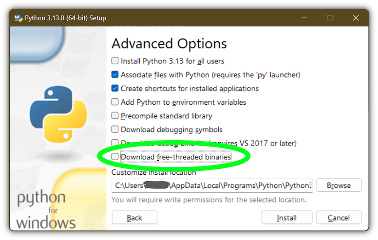

4. Windows で Python を使う¶
このドキュメントは、 Python を Microsoft Windows で使うときに知っておくべき、 Windows 固有の動作についての概要を伝えることを目的としています。
Unlike most Unix systems and services, Windows does not include a system supported installation of Python. Instead, Python can be obtained from a number of distributors, including directly from the CPython team. Each Python distribution will have its own benefits and drawbacks, however, consistency with other tools you are using is generally a worthwhile benefit. Before committing to the process described here, we recommend investigating your existing tools to see if they can provide Python directly.
To obtain Python from the CPython team, use the Python Install Manager. This is a standalone tool that makes Python available as global commands on your Windows machine, integrates with the system, and supports updates over time. You can download the Python Install Manager from python.org/downloads or through the Microsoft Store app.
Once you have installed the Python Install Manager, the global python
command can be used from any terminal to launch your current latest version of
Python. This version may change over time as you add or remove different
versions, and the py list command will show which is current.
In general, we recommend that you create a virtual environment
for each project and run <env>\Scripts\Activate in your terminal to use it.
This provides isolation between projects, consistency over time, and ensures
that additional commands added by packages are also available in your session.
Create a virtual environment using python -m venv <env path>.
If the python or py commands do not seem to be working, please see the
Troubleshooting section below. There are
sometimes additional manual steps required to configure your PC.
Apart from using the Python install manager, Python can also be obtained as NuGet packages. See nuget.org パッケージ below for more information on these packages.
The embeddable distros are minimal packages of Python suitable for embedding into larger applications. They can be installed using the Python install manager. See 埋め込み可能なパッケージ below for more information on these packages.
4.1. Python install manager¶
4.1.1. Installation¶
The Python install manager can be installed from the Microsoft Store app or downloaded and installed from python.org/downloads. The two versions are identical.
To install through the Store, simply click "Install". After it has completed,
open a terminal and type python to get started.
To install the file downloaded from python.org, either double-click and select
"Install", or run Add-AppxPackage <path to MSIX> in Windows Powershell.
After installation, the python, py, and pymanager commands should be
available. If you have existing installations of Python, or you have modified
your PATH variable, you may need to remove them or undo the
modifications. See Troubleshooting for more help with fixing
non-working commands.
When you first install a runtime, you will likely be prompted to add a directory
to your PATH. This is optional, if you prefer to use the py
command, but is offered for those who prefer the full range of aliases (such
as python3.14.exe) to be available. The directory will be
%LocalAppData%\Python\bin by default, but may be customized by an
administrator. Click Start and search for "Edit environment variables for your
account" for the system settings page to add the path.
Each Python runtime you install will have its own directory for scripts. These
also need to be added to PATH if you want to use them.
The Python install manager will be automatically updated to new releases. This does not affect any installs of Python runtimes. Uninstalling the Python install manager does not uninstall any Python runtimes.
If you are not able to install an MSIX in your context, for example, you are using automated deployment software that does not support it, or are targeting Windows Server 2019, please see Advanced installation below for more information.
4.1.2. 基本的な使い方¶
The recommended command for launching Python is python, which will either
launch the version requested by the script being launched, an active virtual
environment, or the default installed version, which will be the latest stable
release unless configured otherwise. If no version is specifically requested and
no runtimes are installed at all, the current latest release will be installed
automatically.
For all scenarios involving multiple runtime versions, the recommended command
is py. This may be used anywhere in place of python or the older
py.exe launcher. By default, py matches the behaviour of python, but
also allows command line options to select a specific version as well as
subcommands to manage installations. These are detailed below.
Because the py command may already be taken by the previous version, there
is also an unambiguous pymanager command. Scripted installs that are
intending to use Python install manager should consider using pymanager, due
to the lower chance of encountering a conflict with existing installs. The only
difference between the two commands is when running without any arguments:
py will launch your default interpreter, while pymanager will display
help (pymanager exec ... provides equivalent behaviour to py ...).
Each of these commands also has a windowed version that avoids creating a
console window. These are pyw, pythonw and pymanagerw. A python3
command is also included that mimics the python command. It is intended to
catch accidental uses of the typical POSIX command on Windows, but is not meant
to be widely used or recommended.
To launch your default runtime, run python or py with the arguments you
want to be passed to the runtime (such as script files or the module to launch):
$> py
...
$> python my-script.py
...
$> py -m this
...
The default runtime can be overridden with the PYTHON_MANAGER_DEFAULT
environment variable, or a configuration file. See Configuration for
information about configuration settings.
To launch a specific runtime, the py command accepts a -V:<TAG> option.
This option must be specified before any others. The tag is part or all of the
identifier for the runtime; for those from the CPython team, it looks like the
version, potentially with the platform. For compatibility, the V: may be
omitted in cases where the tag refers to an official release and starts with
3.
$> py -V:3.14 ...
$> py -V:3-arm64 ...
Runtimes from other distributors may require the company to be included as
well. This should be separated from the tag by a slash, and may be a prefix.
Specifying the company is optional when it is PythonCore, and specifying the
tag is optional (but not the slash) when you want the latest release from a
specific company.
$> py -V:Distributor\1.0 ...
$> py -V:distrib/ ...
If no version is specified, but a script file is passed, the script will be inspected for a shebang line. This is a special format for the first line in a file that allows overriding the command. See Shebang lines for more information. When there is no shebang line, or it cannot be resolved, the script will be launched with the default runtime.
If you are running in an active virtual environment, have not requested a
particular version, and there is no shebang line, the default runtime will be
that virtual environment. In this scenario, the python command was likely
already overridden and none of these checks occurred. However, this behaviour
ensures that the py command can be used interchangeably.
When no runtimes are installed, any launch command will try to install the
requested version and launch it. However, after any version is installed, only
the py exec ... and pymanager exec ... commands will install if the
requested version is absent. Other forms of commands will display an error and
direct you to use py install first.
4.1.3. Command help¶
The py help command will display the full list of supported commands, along
with their options. Any command may be passed the -? option to display its
help, or its name passed to py help.
$> py help
$> py help install
$> py install /?
All commands support some common options, which will be shown by py help.
These options must be specified after any subcommand. Specifying -v or
--verbose will increase the amount of output shown, and -vv will
increase it further for debugging purposes. Passing -q or --quiet will
reduce output, and -qq will reduce it further.
The --config=<PATH> option allows specifying a configuration file to
override multiple settings at once. See Configuration below for more
information about these files.
4.1.4. Listing runtimes¶
$> py list [-f=|--format=<FMT>] [-1|--one] [--online|-s=|--source=<URL>] [<TAG>...]
The list of installed runtimes can be seen using py list. A filter may be
added in the form of one or more tags (with or without company specifier), and
each may include a <, <=, >= or > prefix to restrict to a range.
A range of formats are supported, and can be passed as the --format=<FMT> or
-f <FMT> option. Formats include table (a user friendly table view),
csv (comma-separated table), json (a single JSON blob), jsonl (one
JSON blob per result), exe (just the executable path), prefix (just the
prefix path).
The --one or -1 option only displays a single result. If the default
runtime is included, it will be the one. Otherwise, the "best" result is shown
("best" is deliberately vaguely defined, but will usually be the most recent
version). The result shown by py list --one <TAG> will match the runtime
that would be launched by py -V:<TAG>.
The --only-managed option excludes results that were not installed by the
Python install manager. This is useful when determining which runtimes may be
updated or uninstalled through the py command.
The --online option is short for passing --source=<URL> with the default
source. Passing either of these options will search the online index for
runtimes that can be installed. The result shown by py list --online --one
<TAG> will match the runtime that would be installed by py install <TAG>.
$> py list --online 3.14
For compatibility with the old launcher, the --list, --list-paths,
-0 and -0p commands (e.g. py -0p) are retained. They do not allow
additional options, and will produce legacy formatted output.
4.1.5. Installing runtimes¶
$> py install [-s=|--source=<URL>] [-f|--force] [-u|--update] [--dry-run] [<TAG>...]
New runtime versions may be added using py install. One or more tags may be
specified, and the special tag default may be used to select the default.
Ranges are not supported for installation.
The --source=<URL> option allows overriding the online index that is used to
obtain runtimes. This may be used with an offline index, as shown in
Offline installs.
Passing --force will ignore any cached files and remove any existing install
to replace it with the specified one.
Passing --update will replace existing installs if the new version is newer.
Otherwise, they will be left. If no tags are provided with --update, all
installs managed by the Python install manager will be updated if newer versions
are available. Updates will remove any modifications made to the install,
including globally installed packages, but virtual environments will continue to
work.
Passing --dry-run will generate output and logs, but will not modify any
installs.
Passing --refresh will update all registrations for installed runtimes. This
will recreate Start menu shortcuts, registry keys, and global aliases (such as
python3.14.exe or for any installed scripts). These are automatically
refreshed on installation of any runtime, but may need to be manually refreshed
after installing packages.
In addition to the above options, the --target option will extract the
runtime to the specified directory instead of doing a normal install.
This is useful for embedding runtimes into larger applications.
Unlike a normal install, py will not be aware of the extracted runtime,
and no Start menu or other shortcuts will be created.
To launch the runtime, directly execute the main executable (typically
python.exe) in the target directory.
$> py install ... [-t=|--target=<PATH>] <TAG>
The py exec command will install the requested runtime if it is not already
present. This is controlled by the automatic_install configuration
(PYTHON_MANAGER_AUTOMATIC_INSTALL), and is enabled by default.
If no runtimes are available at all, all launch commands will do an automatic
install if the configuration setting allows. This is to ensure a good experience
for new users, but should not generally be relied on rather than using the
py exec command or explicit install commands.
4.1.6. Offline installs¶
To perform offline installs of Python, you will need to first create an offline index on a machine that has network access.
$> py install --download=<PATH> ... <TAG>...
The --download=<PATH> option will download the packages for the listed tags
and create a directory containing them and an index.json file suitable for
later installation. This entire directory can be moved to the offline machine
and used to install one or more of the bundled runtimes:
$> py install --source="<PATH>\index.json" <TAG>...
The Python install manager can be installed by downloading its installer and moving it to another machine before installing.
Alternatively, the ZIP files in an offline index directory can simply be transferred to another machine and extracted. This will not register the install in any way, and so it must be launched by directly referencing the executables in the extracted directory, but it is sometimes a preferable approach in cases where installing the Python install manager is not possible or convenient.
In this way, Python runtimes can be installed and managed on a machine without access to the internet.
4.1.7. Uninstalling runtimes¶
$> py uninstall [-y|--yes] <TAG>...
Runtimes may be removed using the py uninstall command. One or more tags
must be specified. Ranges are not supported here.
The --yes option bypasses the confirmation prompt before uninstalling.
Instead of passing tags individually, the --purge option may be specified.
This will remove all runtimes managed by the Python install manager, including
cleaning up the Start menu, registry, and any download caches. Runtimes that
were not installed by the Python install manager will not be impacted, and
neither will manually created configuration files.
$> py uninstall [-y|--yes] --purge
The Python install manager can be uninstalled through the Windows "Installed
apps" settings page. This does not remove any runtimes, and they will still be
usable, though the global python and py commands will be removed.
Reinstalling the Python install manager will allow you to manage these runtimes
again. To completely clean up all Python runtimes, run with --purge before
uninstalling the Python install manager.
4.1.8. Configuration¶
Python install manager is configured with a hierarchy of configuration files, environment variables, command-line options, and registry settings. In general, configuration files have the ability to configure everything, including the location of other configuration files, while registry settings are administrator-only and will override configuration files. Command-line options override all other settings, but not every option is available.
This section will describe the defaults, but be aware that modified or overridden installs may resolve settings differently.
A global configuration file may be configured by an administrator, and would be
read first. The user configuration file is stored at
%AppData%\Python\pymanager.json
(note that this location is under Roaming, not Local) and is read next,
overwriting any settings from earlier files. An additional configuration file
may be specified as the PYTHON_MANAGER_CONFIG environment variable or the
--config command line option (but not both).
These locations may be modified by administrative customization options listed
later.
The following settings are those that are considered likely to be modified in normal use. Later sections list those that are intended for administrative customization.
Standard configuration options
Config Key |
Environment Variable |
説明 |
|---|---|---|
|
|
The preferred default version to launch or install. By default, this is interpreted as the most recent non-prerelease version from the CPython team. |
|
|
The preferred default platform to launch or install.
This is treated as a suffix to the specified tag, such that |
|
|
The location where log files are written.
By default, |
|
|
True to allow automatic installs when using |
|
|
True to allow listing and launching runtimes that were not installed by the Python install manager, or false to exclude them. By default, true. |
|
|
True to allow shebangs in |
|
(none) |
Mapping from shebang line template to alternative command, such as
|
|
|
Set the default level of output (0-50). By default, 20. Lower values produce more output. The environment variables are boolean, and may produce additional output during startup that is later suppressed by other configuration. |
|
|
True to confirm certain actions before taking them (such as uninstall), or false to skip the confirmation. By default, true. |
|
|
Override the index feed to obtain new installs from. |
|
(none) |
True to generate global commands for installed packages (such as
|
|
|
Specify the default format used by the |
|
(none) |
Specify the root directory that runtimes will be installed into. If you change this setting, previously installed runtimes will not be usable unless you move them to the new location. |
|
(none) |
Specify the directory where global commands (such as |
|
(none) |
Specify the directory where downloaded files are stored. This directory is a temporary cache, and can be cleaned up from time to time. |
Dotted names should be nested inside JSON objects, for example, list.format
would be specified as {"list": {"format": "table"}}.
4.1.9. Shebang lines¶
If the first line of a script file starts with #!, it is known as a
"shebang" line. Linux and other Unix like operating systems have native
support for such lines and they are commonly used on such systems to indicate
how a script should be executed. The python and py commands allow the
same facilities to be used with Python scripts on Windows.
To allow shebang lines in Python scripts to be portable between Unix and Windows, a number of 'virtual' commands are supported to specify which interpreter to use. The supported virtual commands are:
/usr/bin/env <ALIAS>/usr/bin/env -S <ALIAS>/usr/bin/<ALIAS>/usr/local/bin/<ALIAS><ALIAS>
具体的に、もしスクリプトの1行目が
#! /usr/bin/python
で始まっていたら、デフォルトの Python またはアクティブな仮想環境の位置が特定され、使用されます。多くの Unix 上で動作する Python スクリプトにはすでにこの行が存在する傾向がありますので、ランチャによりそれらのスクリプトを修正なしで使うことができるはずです。あなたが新しいスクリプトを Windows 上で書いていて、Unix 上でも有用であってほしいと思うなら、シェバン行のうち /usr で始まるものを使用すべきです。
Any of the above virtual commands can have <ALIAS> replaced by an alias from
an installed runtime. That is, any command generated in the global aliases
directory (which you may have added to your PATH environment variable)
can be used in a shebang, even if it is not on your PATH. This allows
the use of shebangs like /usr/bin/python3.12 to select a particular runtime.
If no runtimes are installed, or if automatic installation is enabled, the requested runtime will be installed if necessary. See Configuration for information about configuration settings.
The /usr/bin/env form of shebang line will also search the PATH
environment variable for unrecognized commands. This corresponds to the
behaviour of the Unix env program, which performs the same search, but
prefers launching known Python commands. A warning may be displayed when
searching for arbitrary executables, and this search may be disabled by the
shebang_can_run_anything configuration option.
Shebang lines that do not match any of patterns are treated as Windows
executable paths that are absolute or relative to the directory containing the
script file. This is a convenience for Windows-only scripts, such as those
generated by an installer, since the behavior is not compatible with Unix-style
shells. These paths may be quoted, and may include multiple arguments, after
which the path to the script and any additional arguments will be appended.
This functionality may be disabled by the shebang_can_run_anything
configuration option.
Since version 26.3 of the Python install manager, custom shebang templates may
be added to your configuration file. Add the shebang_templates object with
one member for each template (the string to match) and the command to use when
the template is matched. Most commands should be py -V:<tag> (or pyw) to
launch one of your installed runtimes. The py -3.<version> form is also
allowed, as is a plain py to launch the default. No other arguments are
supported.
{
"shebang_templates": {
"/usr/bin/python": "py",
"/usr/bin/my_custom_python": "py -V:MyCustomPython/3"
}
}
If the substitute command is not py or pyw, it will be written back into
the shebang and regular handling continues. If launching arbitrary executables
is permitted, then providing a full path will allow you to redirect from Python
to any executable. The template should match either the entire line (ignoring
leading and trailing whitespace), or up to the first space in the shebang line.
注釈
The behaviour of shebangs in the Python install manager is subtly different
from the previous py.exe launcher, and the old configuration options no
longer apply. If you are specifically reliant on the old behaviour or
configuration, we recommend installing the legacy launcher. The legacy
launcher's py command will override PyManager's one by default, and you
will need to use pymanager commands for installing and uninstalling.
4.1.10. Advanced installation¶
For situations where an MSIX cannot be installed, such as some older
administrative distribution platforms, there is an MSI available from the
python.org downloads page. This MSI has no user interface, and can only perform
per-machine installs to its default location in Program Files. It will attempt
to modify the system PATH environment variable to include this install
location, but be sure to validate this on your configuration.
注釈
Windows Server 2019 is the only version of Windows that CPython supports that does not support MSIX. For Windows Server 2019, you should use the MSI.
Be aware that the MSI package does not bundle any runtimes, and so is not suitable for installs into offline environments without also creating an offline install index. See Offline installs and Administrative configuration for information on handling these scenarios.
Runtimes installed by the MSI are shared with those installed by the MSIX, and
are all per-user only. The Python install manager does not support installing
runtimes per-machine. To emulate a per-machine install, you can use py install
--target=<shared location> as administrator and add your own system-wide
modifications to PATH, the registry, or the Start menu.
When the MSIX is installed, but commands are not available in the PATH
environment variable, they can be found under
%LocalAppData%\Microsoft\WindowsApps\PythonSoftwareFoundation.PythonManager_3847v3x7pw1km
or
%LocalAppData%\Microsoft\WindowsApps\PythonSoftwareFoundation.PythonManager_qbz5n2kfra8p0,
depending on whether it was installed from python.org or through the Windows
Store. Attempting to run the executable directly from Program Files is not
recommended.
To programmatically install the Python install manager, it is easiest to use WinGet, which is included with all supported versions of Windows:
$> winget install 9NQ7512CXL7T -e --accept-package-agreements --disable-interactivity
# Optionally run the configuration checker and accept all changes
$> py install --configure -y
To download the Python install manager and install on another machine, the
following WinGet command will download the required files from the Store to your
Downloads directory (add -d <location> to customize the output location).
This also generates a YAML file that appears to be unnecessary, as the
downloaded MSIX can be installed by launching or using the commands below.
$> winget download 9NQ7512CXL7T -e --skip-license --accept-package-agreements --accept-source-agreements
To programmatically install or uninstall an MSIX using only PowerShell, the Add-AppxPackage and Remove-AppxPackage PowerShell cmdlets are recommended:
$> Add-AppxPackage C:\Downloads\python-manager-25.0.msix
...
$> Get-AppxPackage PythonSoftwareFoundation.PythonManager | Remove-AppxPackage
The latest release can be downloaded and installed by Windows by passing the AppInstaller file to the Add-AppxPackage command. This installs using the MSIX on python.org, and is only recommended for cases where installing via the Store (interactively or using WinGet) is not possible.
$> Add-AppxPackage -AppInstallerFile https://www.python.org/ftp/python/pymanager/pymanager.appinstaller
Other tools and APIs may also be used to provision an MSIX package for all users on a machine, but Python does not consider this a supported scenario. We suggest looking into the PowerShell Add-AppxProvisionedPackage cmdlet, the native Windows PackageManager class, or the documentation and support for your deployment tool.
Regardless of the install method, users will still need to install their own copies of Python itself, as there is no way to trigger those installs without being a logged in user. When using the MSIX, the latest version of Python will be available for all users to install without network access.
Note that the MSIX downloadable from the Store and from the Python website are subtly different and cannot be installed at the same time. Wherever possible, we suggest using the above WinGet commands to download the package from the Store to reduce the risk of setting up conflicting installs. There are no licensing restrictions on the Python install manager that would prevent using the Store package in this way.
4.1.11. Administrative configuration¶
There are a number of options that may be useful for administrators to override configuration of the Python install manager. These can be used to provide local caching, disable certain shortcut types, override bundled content. All of the above configuration options may be set, as well as those below.
Configuration options may be overridden in the registry by setting values under
HKEY_LOCAL_MACHINE\Software\Policies\Python\PyManager, where the
value name matches the configuration key and the value type is REG_SZ. Note
that this key can itself be customized, but only by modifying the core config
file distributed with the Python install manager. We recommend, however, that
registry values are used only to set base_config to a JSON file containing
the full set of overrides. Registry key overrides will replace any other
configured setting, while base_config allows users to further modify
settings they may need.
Note that most settings with environment variables support those variables
because their default setting specifies the variable. If you override them, the
environment variable will no longer work, unless you override it with another
one. For example, the default value of confirm is literally
%PYTHON_MANAGER_CONFIRM%, which will resolve the variable at load time. If
you override the value to yes, then the environment variable will no longer
be used. If you override the value to %CONFIRM%, then that environment
variable will be used instead.
Configuration settings that are paths are interpreted as relative to the directory containing the configuration file that specified them.
Administrative configuration options
Config Key |
説明 |
|---|---|
|
The highest priority configuration file to read. Note that only the built-in configuration file and the registry can modify this setting. |
|
The second configuration file to read. |
|
The third configuration file to read. |
|
Registry location to check for overrides. Note that only the built-in configuration file can modify this setting. |
|
Read-only directory containing locally cached files. |
|
Path or URL to an index to consult when the main index cannot be accessed. |
|
Comma-separated list of shortcut kinds to allow (e.g. |
|
Comma-separated list of shortcut kinds to exclude
(e.g. |
|
True to use hard links for global shortcuts to save disk space. If false,
each shortcut executable is copied instead. After changing this setting,
you must run |
|
Registry location to read and write PEP 514 entries into.
By default, |
|
Start menu folder to write shortcuts into.
By default, |
|
Path to the active virtual environment.
By default, this is |
|
True to suppress visible warnings when a shebang launches an application other than a Python runtime. |
|
A mapping from source URL to settings specific to that index. When multiple configuration files include this section, URL settings are added or overwritten, but individual settings are not merged. These settings are currently only for index signatures. |
4.1.12. Installing free-threaded binaries¶
Added in version 3.13.
Pre-built distributions of the free-threaded build are available
by installing tags with the t suffix.
$> py install 3.14t
$> py install 3.14t-arm64
$> py install 3.14t-32
This will install and register as normal. If you have no other runtimes
installed, then python will launch this one. Otherwise, you will need to use
py -V:3.14t ... or, if you have added the global aliases directory to your
PATH environment variable, the python3.14t.exe commands.
4.1.13. Index signatures¶
Added in version 26.2.
Index files may be signed to detect tampering. A signature is a catalog file
at the same URL as the index with .cat added to the filename. The catalog
file should contain the hash of its matching index file, and should be signed
with a valid Authenticode signature. This allows standard tooling (on Windows)
to generate a signature, and any certificate may be used as long as the client
operating system already trusts its certification authority (root CA).
Index signatures are only downloaded and checked when the local configuration's
source_settings section includes the index URL and requires_signature is
true, or the index JSON contains requires_signature set to true. When the
setting exists in local configuration, even when false, settings in the index
are ignored.
As well as requiring a valid signature, the required_root_subject and
required_publisher_subject settings can further restrict acceptable
signatures based on the certificate Subject fields. Any attribute specified in
the configuration must match the attribute in the certificate (additional
attributes in the certificate are ignored). Typical attributes are CN= for
the common name, O= for the organizational unit, and C= for the
publisher's country.
Finally, the required_publisher_eku setting allows requiring that a specific
Enhanced Key Usage (EKU) has been assigned to the publisher certificate. For
example, the EKU 1.3.6.1.5.5.7.3.3 indicates that the certificate was
intended for code signing (as opposed to server or client authentication).
In combination with a specific root CA, this provides another mechanism to
verify a legitimate signature.
This is an example source_settings section from a configuration file. In
this case, the publisher of the feed is uniquely identified by the combination
of the Microsoft Identity Verification root and the EKU assigned by that root.
The signature for this case would be found at
https://www.python.org/ftp/python/index-windows.json.cat.
{
"source_settings": {
"https://www.python.org/ftp/python/index-windows.json": {
"requires_signature": true,
"required_root_subject": "CN=Microsoft Identity Verification Root Certificate Authority 2020",
"required_publisher_subject": "CN=Python Software Foundation",
"required_publisher_eku": "1.3.6.1.4.1.311.97.608394634.79987812.305991749.578777327"
}
}
}
The same settings could be specified in the index.json file instead. In this
case, the root and EKU are omitted, meaning that the signature must be valid and
have a specific common name in the publisher's certificate, but no other checks
are used.
{
"requires_signature": true,
"required_publisher_subject": "CN=Python Software Foundation",
"versions": [
// ...
]
}
When settings from inside a feed are used, the user is notified and the settings are shown in the log file or verbose output. It is recommended to copy these settings into a local configuration file for feeds that will be used frequently, so that unauthorised modifications to the feed cannot disable verification.
It is not possible to override the location of the signature file in the feed or
through a configuration file. Administrators can provide their own
source_settings in a mandatory configuration file (see
Administrative configuration).
If signature validation fails, you will be notified and prompted to continue.
When interactive confirmation is not allowed (for example, because --yes was
specified), it will always abort. To use a feed with invalid configuration in
this scenario, you must provide a configuration file that disables signature
checking for that feed.
"source_settings": {
"https://www.example.com/feed-with-invalid-signature.json": {
"requires_signature": false
}
}
4.1.14. Troubleshooting¶
If your Python install manager does not seem to be working correctly, please
work through these tests and fixes to see if it helps. If not, please report an
issue at our bug tracker,
including any relevant log files (written to your %TEMP% directory by
default).
Troubleshooting
Symptom |
Things to try |
|---|---|
|
Did you install the Python install manager? |
Click Start, open "Manage app execution aliases", and check that the aliases for "Python (default)" are enabled. If they already are, try disabling and re-enabling to refresh the command. The "Python (default windowed)" and "Python install manager" commands may also need refreshing. |
|
Check that the |
|
Ensure your |
|
|
Did you install the Python install manager? |
Click Start, open "Manage app execution aliases", and check that the aliases for "Python (default)" are enabled. If they already are, try disabling and re-enabling to refresh the command. The "Python (default windowed)" and "Python install manager" commands may also need refreshing. |
|
Ensure your |
|
|
This usually means you have the legacy launcher installed and it has priority over the Python install manager. To remove, click Start, open "Installed apps", search for "Python launcher" and uninstall it. |
|
Click Start, open "Installed apps", look for any existing Python runtimes,
and either remove them or Modify and disable the |
Click Start, open "Manage app execution aliases", and check that your
|
|
|
Check your |
Installs that are managed by the Python install manager will be chosen
ahead of unmanaged installs.
Use |
|
Prerelease and experimental installs that are not managed by the Python
install manager may be chosen ahead of stable releases.
Configure your default tag or uninstall the prerelease runtime
and reinstall it using |
|
|
Click Start, open "Manage app execution aliases", and check that your
|
|
Have you activated a virtual environment?
Run the |
The package may be available but missing the generated executable.
We recommend using the |
|
I installed a package with |
Have you activated a virtual environment?
Run the |
New packages do not automatically have global shortcuts created by the
Python install manager. Similarly, uninstalled packages do not have their
shortcuts removed.
Run |
|
Typing |
This is a known limitation of the operating system. Either specify |
Drag-dropping files onto a script doesn't work |
This is a known limitation of the operating system. It is supported with the legacy launcher, or with the Python install manager when installed from the MSI. |
I have installed the Python install manager multiple times. |
It is possible to install from the Store or WinGet, from the MSIX on the Python website, and from the MSI, all at once. They are all compatible and will share configuration and runtimes. |
See the earlier Advanced installation section for ways to uninstall the install manager other than the typical Installed Apps (Add and Remove Programs) settings page. |
|
My old |
The new Python install manager no longer supports this configuration file or its settings, and so it will be ignored. See Configuration for information about configuration settings. |
4.2. 埋め込み可能なパッケージ¶
Added in version 3.5.
埋め込み用の配布 (embedded distribution) は、最小限の Python 環境を含んだ ZIP ファイルです。これは、エンドユーザから直接的にアクセスされるのではなく何かアプリケーションの一部として動作することを意図したものです。
To install an embedded distribution, we recommend using py install with the
--target option:
$> py install 3.14-embed --target=<directory>
When extracted, the embedded distribution is (almost) fully isolated from the
user's system, including environment variables, system registry settings, and
installed packages. The standard library is included as pre-compiled and
optimized .pyc files in a ZIP, and python3.dll, python313.dll,
python.exe and pythonw.exe are all provided. Tcl/tk (including all
dependents, such as Idle), pip and the Python documentation are not included.
A default ._pth file is included, which further restricts the default search
paths (as described below in モジュールの検索). This file is
intended for embedders to modify as necessary.
サードパーティのパッケージはアプリケーションのインストーラによって、埋め込み用配布と同じ場所にインストールされるべきです。通常の Python インストレーションのように依存性管理に pip を使うことは、この配布ではサポートされません。ですが、ちょっとした注意を払えば、自動更新のために pip を含めて利用することはできるかもしれません。一般的には、ユーザに更新を提供する前に開発者が新しいバージョンとの互換性を保証できるよう、サードパーティーのパッケージはアプリケーションの一部として扱われるべきです ("vendoring")。
この配布の 2 つのお勧めできるユースケースを、以下で説明します。
4.2.1. Python application¶
Python で記述された、必ずしもユーザにその事実を意識させる必要のないアプリケーションです。埋め込み用配布はこのケースで、インストールパッケージ内に Python のプライベートバージョンを含めるのに使えるでしょう。その事実がどのように透過的であるべきかに依存して (あるいは逆に、どのようにプロフェッショナルにみえるべきか)、2 つの選択肢があります。
ランチャとなる特別な実行ファイルを使うことはちょっとしたコーディングを必要としますが、ユーザにとっては最も透過的なユーザ体験となります。カスタマイズされたランチャでは、何もしなければ Python で実行されるプログラムの明白な目印はありません; アイコンはカスタマイズし、会社名やバージョン情報を指定し、ファイルの関連付けがそれに相応しく振舞うようにできます。ほとんどのケースではカスタムランチャは、ハードコードされたコマンドライン文字列で単純に Py_Main を呼び出すので済むはずです。
より簡単なアプローチは、 python.exe または pythonw.exe を必要なコマンドライン引数とともに直接呼び出すバッチファイルかショートカットを提供することです。この場合、そのアプリケーションは実際の名前ではなく Python であるようにみえるので、ほかに動作している Python プロセスやファイルの関連付けと区別するのにユーザが困るかもしれません。
後者のアプローチではパッケージは、パス上で利用可能であることを保証するために、Python 実行ファイルと同じディレクトリにインストールされるべきです。特別なランチャの場合はアプリケーション起動前に検索パスを指定する機会があるので、パッケージはほかの場所に配置できます。
4.2.2. Python の埋め込み¶
ネイティブコードで書かれ、時々スクリプト言語のようなものを必要とするようなアプリケーションです。Python 埋め込み用の配布はこの目的に使えます。一般的に、アプリケーションの大半がネイティブコード内にあり、一部が python.exe を呼び出すか、直接的に python3.dll を使います。どちらのケースでも、ロード可能な Python インタプリタを提供するのには、埋め込み用の配布を展開してアプリケーションのインストレーションのサブディレクトリに置くことで十分です。
アプリケーションが使うパッケージは、インタプリタ初期化前に検索パスを指定する機会があるので、任意の場所にインストールできます。また、埋め込み用配布を使うのと通常の Python インストレーションを使うのとでの根本的な違いはありません。
4.3. nuget.org パッケージ¶
Added in version 3.5.2.
nuget.org パッケージはサイズを縮小した Python 環境で、システム全体で使える Python が無い継続的インテグレーションやビルドシステムで使うことを意図しています。 nuget は ".NET のためのパッケージマネージャ" ですが、ビルド時に使うツールを含んだパッケージに対しても非常に上手く動作します。
nuget の使用方法についての最新の情報を得るには nuget.org に行ってください。 ここから先は Python 開発者にとって十分な要約です。
nuget.exe コマンドラインツールは、例えば curl や PowerShell を使って https://aka.ms/nugetclidl から直接ダウンロードできるでしょう。
このツールを次のように使って、 64 bit あるいは 32 bit のマシン向けの最新バージョンの Python がインストールできます:
nuget.exe install python -ExcludeVersion -OutputDirectory .
nuget.exe install pythonx86 -ExcludeVersion -OutputDirectory .
特定のバージョンを選択するには、 -Version 3.x.y を追加してください。
出力ディレクトリは . から変更されることがあり、パッケージはサブディレクトリにインストールされます。
デフォルトではサブディレクトリはパッケージと同じ名前になり、 -ExcludeVersion オプションを付けないとこの名前はインストールされたバージョンを含みます。
サブディレクトリの中にはインストールされた Python を含んでいる tools ディレクトリがあります:
# Without -ExcludeVersion
> .\python.3.5.2\tools\python.exe -V
Python 3.5.2
# With -ExcludeVersion
> .\python\tools\python.exe -V
Python 3.5.2
一般的には、 nuget パッケージはアップグレードできず、より新しいバージョンは横並びにインストールされ、フルパスで参照されます。 そうする代わりに、手動で直接パッケージを削除し、再度インストールすることもできます。 多くの CI システムは、ビルド間でファイルを保存しておかない場合、この作業を自動的に行います。
tools ディレクトリと同じ場所に build\native ディレクトリがあります。
このディレクトリは、インストールされた Python を参照する C++ プロジェクトで使える MSBuild プロパティファイル python.props を含みます。
ここに設定を入れると自動的にヘッダを使い、ビルド時にライプラリをインポートします。
The package information pages on nuget.org are www.nuget.org/packages/python for the 64-bit version, www.nuget.org/packages/pythonx86 for the 32-bit version, and www.nuget.org/packages/pythonarm64 for the ARM64 version
4.3.1. フリースレッドパッケージ (Free-threaded packages)¶
Added in version 3.13.
フリースレッドバイナリ (free-threaded binaries) を含むパッケージは、 64-bit 版では python-freethreaded 、 32-bit 版では pythonx86-freethreaded 、 ARM64 版では pythonarm64-freethreaded と命名されます。これらのパッケージはともに python3.13t.exe と python.exe エントリーポイントを含み、どちらもフリースレッドで実行されます。
4.4. 別のバンドル¶
標準の CPython の配布物の他に、追加の機能を持っている修正されたパッケージがあります。以下は人気のあるバージョンとそのキーとなる機能です:
- ActivePython
マルチプラットフォーム互換のインストーラー、ドキュメント、 PyWin32
- Anaconda
人気のある (numpy, scipy や pandas のような) 科学系モジュールと、パッケージマネージャ
conda。- Enthought Deployment Manager
"次世代の Python 環境とパッケージマネージャー" ("The Next Generation Python Environment and Package Manager")。
以前は Enthought が Canopy を提供していましたが、これは 2016 年にサポートが終了しました。
- WinPython
ビルド済みの科学系パッケージと、パッケージのビルドのためのツールを含む、Windows 固有のディストリビューション。
これらパッケージは Python や他のライブラリの最新バージョンが含まれるとは限りませんし、コア Python チームはこれらを保守もしませんしサポートもしませんのでご理解ください。
4.5. Supported Windows versions¶
As specified in PEP 11, a Python release only supports a Windows platform while Microsoft considers the platform under extended support. This means that Python 3.14 supports Windows 10 and newer. If you require Windows 7 support, please install Python 3.8. If you require Windows 8.1 support, please install Python 3.12.
4.6. Removing the MAX_PATH limitation¶
Windows は歴史的にパスの長さが 260 文字に制限されています。 つまり、これより長いパスは解決できず結果としてエラーになるということです。
In the latest versions of Windows, this limitation can be expanded to over
32,000 characters. Your administrator will need to activate the "Enable Win32
long paths" group policy, or set LongPathsEnabled to 1 in the registry
key HKEY_LOCAL_MACHINE\SYSTEM\CurrentControlSet\Control\FileSystem.
これにより、 open() 関数や os モジュール、他のほとんどのパスの機能が 260 文字より長いパスを受け入れ、返すことができるようになります。
After changing the above option and rebooting, no further configuration is required.
4.7. UTF-8 モード¶
Added in version 3.7.
Windows still uses legacy encodings for the system encoding (the ANSI Code
Page). Python uses it for the default encoding of text files (e.g.
locale.getencoding()).
This may cause issues because UTF-8 is widely used on the internet and most Unix systems, including WSL (Windows Subsystem for Linux).
You can use the Python UTF-8 Mode to change the default text
encoding to UTF-8. You can enable the Python UTF-8 Mode via
the -X utf8 command line option, or the PYTHONUTF8=1 environment
variable. See PYTHONUTF8 for enabling UTF-8 mode, and
Python install manager for how to modify environment variables.
When the Python UTF-8 Mode is enabled, you can still use the system encoding (the ANSI Code Page) via the "mbcs" codec.
Note that adding PYTHONUTF8=1 to the default environment variables
will affect all Python 3.7+ applications on your system.
If you have any Python 3.7+ applications which rely on the legacy
system encoding, it is recommended to set the environment variable
temporarily or use the -X utf8 command line option.
注釈
Even when UTF-8 mode is disabled, Python uses UTF-8 by default on Windows for:
Console I/O including standard I/O (see PEP 528 for details).
The filesystem encoding (see PEP 529 for details).
4.8. モジュールの検索¶
These notes supplement the description at sys.path モジュール検索パスの初期化 with detailed Windows notes.
._pth ファイルが見付からなかったときは、 Windows では sys.path は次のように設定されます:
最初に空のエントリが追加されます。これはカレントディレクトリを指しています。
その次に、
PYTHONPATH環境変数が存在するとき、 環境変数 で解説されているように追加されます。 Windows ではドライブ識別子 (C:\など)と区別するために、この環境変数に含まれるパスの区切り文字はセミコロンでなければならない事に注意してください。追加で "アプリケーションのパス" を
HKEY_CURRENT_USERかHKEY_LOCAL_MACHINEの中の\SOFTWARE\Python\PythonCore{version}\PythonPathのサブキーとして登録することができます。サブキーはデフォルト値としてセミコロンで区切られたパス文字列を持つことができ、書くパスがsys.pathに追加されます。 (既存のインストーラーはすべて HKLM しか利用しないので、 HKCU は通常空です)PYTHONHOMEが設定されている場合、それが "Python Home" として扱われます。 それ以外の場合、 "Python Home" を推定するために Python の実行ファイルのパスから "目印ファイル" (Lib\os.pyまたはpythonXY.zip) が探されます。 Python home が見つかった場合、そこからいくつかのサブディレクトリ (Lib,plat-winなど) がsys.pathに追加されます。 見つからなかった場合、コアとなる Python path はレジストリに登録された PythonPath から構築されます。Python Home が見つからず、環境変数
PYTHONPATHが指定されず、レジストリエントリが見つからなかった場合、関連するデフォルトのパスが利用されます (例:.\Lib;.\plat-winなど)。
メインの実行ファイルと同じ場所か一つ上のディレクトリに pyvenv.cfg がある場合、以下の異なった規則が適用されます:
PYTHONHOMEが設定されておらず、homeが絶対パスの場合、home 推定の際メインの実行ファイルから推定するのではなくこのパスを使います。
結果としてこうなります:
python.exeかそれ以外の Python ディレクトリにある .exe ファイルを実行したとき (インストールされている場合でも PCbuild から直接実行されている場合でも) core path が利用され、レジストリ内の core path は無視されます。それ以外のレジストリの "application paths" は常に読み込まれます。Python が他の .exe ファイル (他のディレクトリに存在する場合や、COM経由で組み込まれる場合など) にホストされている場合は、 "Python Home" は推定されず、レジストリにある core path が利用されます。それ以外のレジストリの "application paths" は常に読み込まれます。
Python がその home を見つけられず、レジストリの値もない場合 (これはいくつかのとてもおかしなインストレーションセットアップの凍結された .exe)、パスは最小限のデフォルトとして相対パスが使われます。
自身のアプリケーションや配布物に Python をバンドルしたい場合には、以下の助言 (のいずれかまたは組合せ) によりほかのインストレーションとの衝突を避けることができます:
Include a
._pthfile alongside your executable containing the directories to include. This will ignore paths listed in the registry and environment variables, and also ignoresiteunlessimport siteis listed.If you are loading
python3.dllorpython37.dllin your own executable, explicitly setPyConfig.module_search_pathsbeforePy_InitializeFromConfig().自身のアプリケーションから
python.exeを起動する前に、PYTHONPATHをクリアしたり上書きし、PYTHONHOMEをセットしてください。If you cannot use the previous suggestions (for example, you are a distribution that allows people to run
python.exedirectly), ensure that the landmark file (Lib\os.py) exists in your install directory. (Note that it will not be detected inside a ZIP file, but a correctly named ZIP file will be detected instead.)
これらはシステムワイドにインストールされたファイルが、あなたのアプリケーションにバンドルされた標準ライブラリのコピーに優先しないようにします。これをしなければあなたのアプリケーションのユーザは、何かしら問題を抱えるかもしれません。上で列挙した最初の提案が最善です。ほかのものはレジストリ内の非標準のパスやユーザの site-packages の影響を少し受けやすいからです。
バージョン 3.6 で変更: Add ._pth file support and removes applocal option from
pyvenv.cfg.
バージョン 3.6 で変更: Add pythonXX.zip as a potential landmark when directly adjacent
to the executable.
バージョン 3.6 で非推奨: Modules specified in the registry under Modules (not PythonPath)
may be imported by importlib.machinery.WindowsRegistryFinder.
This finder is enabled on Windows in 3.6.0 and earlier, but may need to
be explicitly added to sys.meta_path in the future.
4.9. 追加のモジュール¶
Python は全プラットフォーム互換を目指していますが、 Windows にしかないユニークな機能もあります。標準ライブラリと外部のライブラリの両方で、幾つかのモジュールと、そういった機能を使うためのスニペットがあります。
Windows 固有の標準モジュールは、 MS Windows 固有のサービス に書かれています。
4.9.1. PyWin32¶
The PyWin32 module by Mark Hammond is a collection of modules for advanced Windows-specific support. This includes utilities for:
Component Object Model (COM)
Win32 API 呼び出し
レジストリ
イベントログ
Microsoft Foundation Classes (MFC) user interfaces
PythonWin は PyWin32 に付属している、サンプルのMFCアプリケーションです。これはビルトインのデバッガを含む、組み込み可能なIDEです。
参考
- Win32 How Do I...?
by Tim Golden
- Python and COM
by David and Paul Boddie
4.9.2. cx_Freeze¶
cx_Freeze
wraps Python scripts into executable Windows programs
(*.exe files). When you have done this, you can distribute your
application without requiring your users to install Python.
4.10. Windows 上で Python をコンパイルする¶
CPython を自分でコンパイルしたい場合、最初にすべきことは ソース を取得することです。最新リリース版のソースか、新しい チェックアウト をダウンロードできます。
ソースツリーには Microsoft Visual Studio でのビルドのソリューションファイルとプロジェクトファイルが含まれていて、これが公式の Python リリースに使われているコンパイラです。これらファイルは PCbuild ディレクトリ内にあります。
ビルドプロセスについての一般的な情報は、PCbuild/readme.txt にあります。
拡張モジュールについては、 Windows 上での C および C++ 拡張モジュールのビルド を参照してください。
4.11. The full installer (deprecated)¶
バージョン 3.14 で非推奨: This installer is deprecated since 3.14 and will not be produced for Python 3.16 or later. See Python install manager for the modern installer.
4.11.1. インストール手順¶
ダウンロードできる Python 3.14 のインストーラは 4 つあります。 インタプリタの 32 ビット版、64 ビット版がそれぞれ 2 つずつあります。 WEB インストーラ は最初のダウンロードサイズは小さく、必要なコンポーネントはインストーラ実行時に必要に応じて自動的にダウンロードします。 オフラインインストーラ にはデフォルトインストールに必要なコンポーネントが含まれていて、インターネット接続はオプショナルな機能のためにだけに必要となります。 インストール時にダウンロードを避けるほかの方法については Installing without downloading を参照して下さい。
インストーラを開始すると、2つの選択肢からひとつを選べます:

"Install Now" を選択した場合:
管理者権限は 不要です (ただし C ランタイムライブラリのシステム更新が必要であったり、 Python install manager をすべてのユーザ向けにインストールする場合は必要です)。
Python はあなたのユーザディレクトリにインストールされます。
Python install manager はこのインストールウィザード最初のページの下部のチェックボックス指定に従ってインストールされます。
標準ライブラリ、テストスイート、ランチャ、pip がインストールされます。
このインストールウィザード最初の下部のチェックボックスをチェックすれば、環境変数
PATHにインストールディレクトリが追加されます。ショートカットはカレントユーザだけに可視になります。
"Customize installation" を選択すると、インストール場所、その他オプションやインストール後のアクションの変更などのインストールの有りようを選べます。デバッグシンボルやデバッグバイナリをインストールするならこちらを選択する必要があるでしょう。
すべてのユーザのためのインストールのためには "Customize installation" を選んでください。この場合:
管理者資格か承認が必要かもしれません。
Python は Program Files ディレクトリにインストールされます。
Python install manager は Windows ディレクトリにインストールされます。
オプショナルな機能はインストール中に選択できます。
標準ライブラリをバイトコードにプリコンパイルできます。
そう選択すれば、インストールディレクトリはシステム環境変数
PATHに追加されます。ショートカットがすべてのユーザで利用できるようになります。
4.11.2. Removing the MAX_PATH limitation¶
Windows は歴史的にパスの長さが 260 文字に制限されています。 つまり、これより長いパスは解決できず結果としてエラーになるということです。
Windows の最新版では、この制限は約 32,000 文字まで拡張できます。
管理者が、グループポリシーの "Win32 の長いパスを有効にする (Enable Win32 long paths)" を有効にするか、レジストリキー HKEY_LOCAL_MACHINE\SYSTEM\CurrentControlSet\Control\FileSystem の LongPathsEnabled の値を 1 に設定する必要があります。
これにより、 open() 関数や os モジュール、他のほとんどのパスの機能が 260 文字より長いパスを受け入れ、返すことができるようになります。
これらのオプションを変更したら、それ以上の設定は必要ありません。
バージョン 3.6 で変更: Python で長いパスのサポートが可能になりました。
4.11.3. Installing without UI¶
インストーラの GUI で利用できるすべてのオプションは、コマンドラインからも指定できます。これによりユーザとの対話なしで数多くの機器に同じインストールを行うような、スクリプト化されたインストールを行うことができます。ちょっとしたデフォルトの変更のために、GUI を抑制することなしにこれらコマンドラインオプションをセットすることもできます。
インストーラーには、以下のオプション (/? でインストーラを実行することで確認できます) を渡すことができます:
名前 |
説明 |
|---|---|
/passive |
ユーザーの操作なしでも進捗を表示する |
/quiet |
UI を表示せずにインストール・アンインストールする |
/simple |
ユーザーによるカスタマイズができないようにする |
/uninstall |
(確認無しで) Python を削除する |
/layout [ディレクトリ] |
すべてのコンポーネントを事前にダウンロードする |
/log [ファイル名] |
ログファイルの場所を指定する |
ほかのすべてのオプションは name=value の形で渡します。value は大抵 0 で機能を無効化、 1 で機能を有効化、であるとかパスの指定です。利用可能なオプションの完全なリストは以下の通りです。
名前 |
説明 |
デフォルト |
|---|---|---|
InstallAllUsers |
システムワイドなインストールを実行する。 |
0 |
TargetDir |
インストール先ディレクトリ。 |
InstallAllUsers に基いて選択されます。 |
DefaultAllUsersTargetDir |
すべてのユーザ向けインストールのためのデフォルトインストール先ディレクトリ。 |
|
DefaultJustForMeTargetDir |
自分一人用インストールのためのデフォルトインストール先ディレクトリ。 |
|
DefaultCustomTargetDir |
カスタムインストールディレクトリとしてデフォルトで GUI に表示される値。 |
(空) |
AssociateFiles |
ランチャもインストールする場合に、ファイルの関連付けを行う。 |
1 |
CompileAll |
すべての |
0 |
PrependPath |
|
0 |
AppendPath |
|
0 |
Shortcuts |
インストールするインタプリタ、ドキュメント、IDLE へのショートカットを作る。 |
1 |
Include_doc |
Python マニュアルをインストールする。 |
1 |
Include_debug |
デバッグバイナリをインストールする。 |
0 |
Include_dev |
開発者用ヘッダーとライブラリをインストールする。これを省略すると、使用不可能なインストールになる可能性があります。 |
1 |
Include_exe |
|
1 |
Include_launcher |
Python install manager をインストールする。 |
1 |
InstallLauncherAllUsers |
すべてのユーザーにランチャーをインストールする。 |
1 |
Include_lib |
標準ライブラリと拡張モジュールをインストールする。これを省略すると、使用不可能なインストールになる可能性があります。 |
1 |
Include_pip |
バンドル版の pip と setuptools をインストールする。 |
1 |
Include_symbols |
デバッグシンボル ( |
0 |
Include_tcltk |
Tcl/Tk サポートと IDLE をインストールする。 |
1 |
Include_test |
標準ライブラリのテストスイートをインストールする。 |
1 |
Include_tools |
ユーティリティスクリプトをインストールする。 |
1 |
LauncherOnly |
ランチャのみをインストールする。これは他のほとんどのオプションを上書きします。 |
0 |
SimpleInstall |
最大限のインストーラ GUI を無効にする。 |
0 |
SimpleInstallDescription |
単純化されたインストーラ GUI を使う際に表示するカスタムメッセージ。 |
(空) |
例えばデフォルトでシステムワイドな Python インストレーションを静かに行うには、以下コマンドを使えます (コマンドプロンプトより):
python-3.9.0.exe /quiet InstallAllUsers=1 PrependPath=1 Include_test=0
テストスイートなしの Python のパーソナルなコピーのインストールをユーザに簡単に行わせるには、以下コマンドのショートカットを作れば良いです。これはインストーラの最初のページを単純化して表示し、また、カスタマイズできないようにします:
python-3.9.0.exe InstallAllUsers=0 Include_launcher=0 Include_test=0
SimpleInstall=1 SimpleInstallDescription="Just for me, no test suite."
(ランチャのインストールを省略するとファイルの関連付けも省略されるので、これはランチャインストールを含めたシステムワイドなインストールをした場合のユーザごとインストールに限った場合のお勧めです。)
上でリストしたオプションは、実行ファイルと同じ場所の unattend.xml と名付けられたファイルで与えることもできます。このファイルはオプションとその値のリストを指定します。値がアトリビュートとして与えられた場合、それは数値であれば数値に変換されます。エレメントテキストで与える場合は常に文字列のままです。以下は、先の例と同じオプションをセットするファイルの実例です:
<Options>
<Option Name="InstallAllUsers" Value="no" />
<Option Name="Include_launcher" Value="0" />
<Option Name="Include_test" Value="no" />
<Option Name="SimpleInstall" Value="yes" />
<Option Name="SimpleInstallDescription">Just for me, no test suite</Option>
</Options>
4.11.4. Installing without downloading¶
Python のいくつかの機能は最初にダウンロードしたインストーラには含まれていないため、それらの機能をインストールしようと選択するとインターネット接続が必要になります。 インターネット接続が必要にならないように、全てのコンポーネントをすぐにできる限りダウンロードして、完全な 配置構成 (layout) を作成し、どんな機能が選択されたかに関わらず、それ以上インターネット接続を必要がないようにします。 この方法のダウンロードサイズは必要以上に大きくなるかもしれませんが、たくさんの回数インストールしようとする場合には、ローカルにキャッシュされたコピーを持つことはとても有用です。
コマンドプロンプトから以下のコマンドを実行して、必要なファイルをできる限り全てダウンロードします。
python-3.9.0.exe 部分は実際のインストーラの名前に置き換え、同名のファイルどうしの衝突が起こらないように、個別のディレクトリ内に配置構成を作るのを忘れないようにしてください。
python-3.9.0.exe /layout [optional target directory]
進捗表示を隠すのに /quiet オプションを指定することもできます。
4.11.5. インストール後の変更¶
いったん Python がインストールされたら、Windows のシステム機能の「プログラムと機能」ツールから機能の追加や削除ができます。Python のエントリを選択して「アンインストールと変更」を選ぶことで、インストーラをメンテナンスモードで開きます。
インストーラ GUI で "Modify" を選ぶと、チェックボックスの選択を変えることで機能の追加削除ができます - チェックボックスの選択を変えなければ、何かがインストールされたり削除されたりはしません。いくつかのオプションはこのモードでは変更することはできません。インストールディレクトリなどです。それらを変えたいのであれば、完全に削除してから再インストールする必要があります。
"Repair" では、現在の設定で本来インストールされるべきすべてのファイルを検証し、削除されていたり更新されていたりするファイルを修正します。
"Uninstall" は Python を完全に削除します。「プログラムと機能」内の自身のエントリを持つ Python install manager の例外が起こります。
4.11.6. Installing free-threaded binaries¶
Added in version 3.13.
To install pre-built binaries with free-threading enabled (see PEP 703), you should select "Customize installation". The second page of options includes the "Download free-threaded binaries" checkbox.

Selecting this option will download and install additional binaries to the same
location as the main Python install. The main executable is called
python3.13t.exe, and other binaries either receive a t suffix or a full
ABI suffix. Python source files and bundled third-party dependencies are shared
with the main install.
The free-threaded version is registered as a regular Python install with the
tag 3.13t (with a -32 or -arm64 suffix as normal for those
platforms). This allows tools to discover it, and for the Python install manager to
support py.exe -3.13t. Note that the launcher will interpret py.exe -3
(or a python3 shebang) as "the latest 3.x install", which will prefer the
free-threaded binaries over the regular ones, while py.exe -3.13 will not.
If you use the short style of option, you may prefer to not install the
free-threaded binaries at this time.
To specify the install option at the command line, use
Include_freethreaded=1. See Installing without downloading for instructions on
pre-emptively downloading the additional binaries for offline install. The
options to include debug symbols and binaries also apply to the free-threaded
builds.
Free-threaded binaries are also available on nuget.org.
4.12. Python launcher for Windows (deprecated)¶
バージョン 3.14 で非推奨: The launcher and this documentation have been superseded by the Python Install Manager described above. This is preserved temporarily for historical interest.
Added in version 3.3.
Windows の Python ランチャは、異なる Python のバージョンの位置の特定と実行を助けるユーティリティです。スクリプト (またはコマンドライン) で特定の Python のバージョンの設定を与えられると、位置を特定し、そのバージョンを実行します。
環境変数 PATH による方法と違って、このランチャは Python の一番適切なバージョンを、正しく選択します。このランチャはシステムワイドなものよりもユーザごとのインストレーションの方を優先し、また、新しくインストールされた順よりも言語のバージョンを優先します。
ランチャのオリジナルの仕様は PEP 397 にあります。
4.12.1. 最初に¶
4.12.1.1. コマンドラインから起動する¶
バージョン 3.6 で変更.
Python 3.3 とそれ以降のシステムワイドなインストールでは、ランチャーが PATH に追加されます。ランチャーは、入手可能なあらゆる Python のバージョンに互換性があるため、実際にどのバージョンの Python がインストールされているのかは重要ではありません。ランチャーが使えるかを確認するには以下のコマンドをコマンドプロンプトで実行してください:
py
インストールされている最新バージョンの Python が起動するはずです。 通常どおりに終了することもできますし、追加のコマンドライン引数を指定して直接 Python に渡すこともできます。
複数のバージョンの Python (たとえば 3.7 と 3.14) がインストールされている場合は、Python 3.14 が起動することになります。Python 3.7 を起動したいなら、次のコマンドを実行してみてください:
py -3.7
インストールしてある Python 2 の最新バージョンを起動したい場合は、次のコマンドを実行してみてください:
py -2
以下のようなエラーが出るようであれば、ランチャはインストールされていません:
'py' is not recognized as an internal or external command,
operable program or batch file.
このコマンド:
py --list
これは、現在インストールされている Python のバージョンを表示します。
The -x.y argument is the short form of the -V:Company/Tag argument,
which allows selecting a specific Python runtime, including those that may have
come from somewhere other than python.org. Any runtime registered by following
PEP 514 will be discoverable. The --list command lists all available
runtimes using the -V: format.
When using the -V: argument, specifying the Company will limit selection to
runtimes from that provider, while specifying only the Tag will select from all
providers. Note that omitting the slash implies a tag:
# Select any '3.*' tagged runtime
py -V:3
# Select any 'PythonCore' released runtime
py -V:PythonCore/
# Select PythonCore's latest Python 3 runtime
py -V:PythonCore/3
The short form of the argument (-3) only ever selects from core Python
releases, and not other distributions. However, the longer form (-V:3) will
select from any.
The Company is matched on the full string, case-insensitive. The Tag is matched
on either the full string, or a prefix, provided the next character is a dot or a
hyphen. This allows -V:3.1 to match 3.1-32, but not 3.10. Tags are
sorted using numerical ordering (3.10 is newer than 3.1), but are
compared using text (-V:3.01 does not match 3.1).
4.12.1.2. 仮想環境 (Virtual environments)¶
Added in version 3.5.
(標準ライブラリの venv モジュールか外部ツール virtualenv で作った) 仮想環境がアクティブな状態で Python の明示的なバージョンを指定せずにランチャを起動すると、ランチャはグローバルなインタプリタではなくその仮想環境のものを実行します。グローバルなほうのインタプリタを実行するには、仮想環境の動作を停止するか、または明示的にグローバルな Python バージョンを指定してください。
4.12.1.3. スクリプトから起動する¶
テスト用の Python スクリプトを作成しましょう。hello.py という名前で以下の内容のファイルを作成してください
#! python
import sys
sys.stdout.write("hello from Python %s\n" % (sys.version,))
hello.py が存在するディレクトリで、下記コマンドを実行してください:
py hello.py
インストールされている最新の Python 2.x のバージョン番号が表示されるはずです。では、1行目を以下のように変更してみてください:
#! python3
コマンドを再実行すると、今度は最新の Python 3.x の情報が表示されるはずです。これまでのコマンドラインの例と同様に、より細かいバージョン修飾子を指定することもできます。Python 3.7 がインストールされている場合、最初の行を #! python3.7 に変更すると、3.7 のバージョン情報が表示されるはずです。
コマンドからの呼び出しとは異なり、後ろに何もつかない "python" はインストールされている Python2.x の最新バージョンを利用することに注意してください。これは後方互換性と、 python が一般的に Python 2 を指すUnix との互換性のためです。
4.12.1.4. ファイルの関連付けから起動する¶
インストール時に、ランチャは Python ファイル (すなわち .py, .pyw, .pyc ファイル) に関連付けられたはずです。そのため、これらのファイルを Windows のエクスプローラーでダブルクリックした際はランチャが使われ、上で述べたのと同じ機能を使ってスクリプトが使われるべきバージョンを指定できるようになります。
このことによる重要な利点は、単一のランチャが先頭行の内容によって複数の Python バージョンを同時にサポートできることです。
4.12.2. Shebang lines¶
スクリプトファイルの先頭の行が #! で始まっている場合は、その行はシェバン (shebang) 行として知られています。
Linux や他の Unix 系 OS はこうした行をもともとサポートしているため、それらのシステムでは、スクリプトがどのように実行されるかを示すために広く使われます。
Windows の Python ランチャは、Windows 上の Python スクリプトが同じ機能を使用できるようにし、上の例ではそれらの機能の使用法を示しています。
Python スクリプトのシェバン行を Unix-Windows 間で移植可能にするため、このランチャは、どのインタプリタが使われるかを指定するための大量の '仮想' コマンドをサポートしています。サポートされる仮想コマンドには以下のものがあります:
/usr/bin/env/usr/bin/python/usr/local/bin/pythonpython
具体的に、もしスクリプトの1行目が
#! /usr/bin/python
で始まっていたら、デフォルトの Python またはアクティブな仮想環境の位置が特定され、使用されます。多くの Unix 上で動作する Python スクリプトにはすでにこの行が存在する傾向がありますので、ランチャによりそれらのスクリプトを修正なしで使うことができるはずです。あなたが新しいスクリプトを Windows 上で書いていて、Unix 上でも有用であってほしいと思うなら、シェバン行のうち /usr で始まるものを使用すべきです。
上記のどの仮想コマンドでも、(メジャーバージョンだけや、メジャー・マイナーバージョンの両方で) 明示的にバージョンを指定できます。
さらに、 "-32" をマイナーバージョンの後ろに追加して 32-bit 版を要求できます。
例えば、 /usr/bin/python3.7-32 は 32-bit の Python 3.7 を使うよう要求します。仮想環境がアクティブになっている場合は、バージョンは無視され、その環境が使用されます。
Added in version 3.7: python ランチャの 3.7 からは、末尾に "-64" を付けて 64-bit 版を要求できます。
さらに、マイナーバージョン無しのメジャーバージョンとアーキテクチャだけ (例えば、 /usr/bin/python3-64) で指定できます。
バージョン 3.11 で変更: The "-64" suffix is deprecated, and now implies "any architecture that is
not provably i386/32-bit". To request a specific environment, use the new
-V:TAG argument with the complete tag.
バージョン 3.13 で変更: Virtual commands referencing python now prefer an active virtual
environment rather than searching PATH. This handles cases where
the shebang specifies /usr/bin/env python3 but python3.exe is
not present in the active environment.
The /usr/bin/env form of shebang line has one further special property.
Before looking for installed Python interpreters, this form will search the
executable PATH for a Python executable matching the name provided
as the first argument. This corresponds to the behaviour of the Unix env
program, which performs a PATH search.
If an executable matching the first argument after the env command cannot
be found, but the argument starts with python, it will be handled as
described for the other virtual commands.
The environment variable PYLAUNCHER_NO_SEARCH_PATH may be set
(to any value) to skip this search of PATH.
Shebang lines that do not match any of these patterns are looked up in the
[commands] section of the launcher's .INI file.
This may be used to handle certain commands in a way that makes sense for your
system. The name of the command must be a single argument (no spaces in the
shebang executable), and the value substituted is the full path to the
executable (additional arguments specified in the .INI will be quoted as part
of the filename).
[commands]
/bin/xpython=C:\Program Files\XPython\python.exe
Any commands not found in the .INI file are treated as Windows executable paths that are absolute or relative to the directory containing the script file. This is a convenience for Windows-only scripts, such as those generated by an installer, since the behavior is not compatible with Unix-style shells. These paths may be quoted, and may include multiple arguments, after which the path to the script and any additional arguments will be appended.
4.12.3. シェバン行の引数¶
シェバン行では Python インタプリタに渡される追加の引数を指定することもできます。たとえば、シェバン行に以下のように書かれているとしましょう:
#! /usr/bin/python -v
この場合、Python は -v オプション付きで起動するでしょう
4.12.4. カスタマイズ¶
4.12.4.1. INI ファイルによるカスタマイズ¶
ランチャは2つの .ini ファイルを探しに行きます。具体的には、現在のユーザーのアプリケーションデータディレクトリ (%LOCALAPPDATA% または $env:LocalAppData) の py.ini と、ランチャと同じディレクトリにある py.ini です。'コンソール' 版のランチャ (つまり py.exe) と 'Windows' 版のランチャ (つまり pyw.exe) は同一の .ini ファイルを使用します。
"application data" ディレクトリで指定された設定は、実行ファイルの隣にあるものより優先されます。そのため、ランチャの隣にある .ini ファイルへの書き込みアクセスができないユーザは、グローバルな .ini ファイル内のコマンドを上書き (override) できます。
4.12.4.2. デフォルトのPythonバージョンのカスタマイズ¶
どのバージョンの Python をコマンドで使用するかを定めるため、バージョン修飾子がコマンドに含められることがあります。 バージョン修飾子はメジャーバージョン番号で始まり、オプションのピリオド ('.') とマイナーバージョン指定子がそれに続きます。 さらに、 "-32" や "-64" を追記して 32-bit あるいは 64-bit のどちらの実装が要求されるかを指示できます。
たとえば、#!python というシェバン行はバージョン修飾子を含みませんが、#!python3 はメジャーバージョンを指定するバージョン修飾子を含みます。
If no version qualifiers are found in a command, the environment
variable PY_PYTHON can be set to specify the default version
qualifier. If it is not set, the default is "3". The variable can
specify any value that may be passed on the command line, such as "3",
"3.7", "3.7-32" or "3.7-64". (Note that the "-64" option is only
available with the launcher included with Python 3.7 or newer.)
マイナーバージョン修飾子が見つからない場合、環境変数 PY_PYTHON{major} (ここで {major} は、上記で決定された現在のメジャーバージョン修飾子) を設定して完全なバージョンを指定することができます。そういったオプションが見つからなければ、ランチャはインストール済みの Python バージョンを列挙して、見つかったそのメジャーバージョン向けマイナーリリースのうち最新のものを使用します。保証されているわけではありませんが、通常はそのメジャーバージョン系で最も後にインストールしたバージョンになります。
64-bit Windows で、同一の (major.minor) Python バージョンの 32-bit と 64-bit の両方の実装がインストールされていた場合、64-bit バージョンのほうが常に優先されます。これはランチャが 32-bit と 64-bit のどちらでも言えることで、32-bit のランチャは、指定されたバージョンが使用可能であれば、64-bit の Python を優先して実行します。これは、どのバージョンが PC にインストールされているかのみでランチャの挙動を予見でき、それらがインストールされた順番に関係なくなる (つまり最後にインストールされた Python とランチャが 32-bit か 64-bit かを知らなくともよい) ようにするためです。上に記したとおり、オプションの "-32", "-64" サフィックスでこの挙動を変更できます。
例:
関連するオプションが設定されていない場合、
pythonおよびpython2コマンドはインストールされている最新の Python 2.x バージョンを使用し、python3コマンドはインストールされている最新の Python 3.x を使用します。python3.7コマンドは、バージョンが完全に指定されているため、全くオプションを参照しません。PY_PYTHON=3の場合、pythonおよびpython3コマンドはともにインストールされている最新の Python 3 を使用します。PY_PYTHON=3.7-32の場合、pythonコマンドは 32-bit 版の 3.7 を使用しますが、python3コマンドはインストールされている最新の Python を使用します (メジャーバージョンが指定されているため、PY_PYTHON は全く考慮されません。)PY_PYTHON=3でPY_PYTHON3=3.7の場合、pythonおよびpython3はどちらも 3.7 を使用します
環境変数に加え、同じ設定をランチャが使う INI ファイルで構成することができます。INI ファイルの該当するセクションは [defaults] と呼ばれ、キー名は環境変数のキー名から PY_ という接頭辞を取ったものと同じです (INI ファイルのキー名は大文字小文字を区別しないことにご注意ください)。環境変数の内容は INI ファイルでの指定を上書きします。
例えば:
PY_PYTHON=3.7と設定することは、INI ファイルに下記が含まれることと等価です:
[defaults]
python=3.7
PY_PYTHON=3とPY_PYTHON3=3.7を設定することは、INI ファイルに下記が含まれることと等価です:
[defaults]
python=3
python3=3.7
4.12.5. 診断¶
If an environment variable PYLAUNCHER_DEBUG is set (to any value), the
launcher will print diagnostic information to stderr (i.e. to the console).
While this information manages to be simultaneously verbose and terse, it
should allow you to see what versions of Python were located, why a
particular version was chosen and the exact command-line used to execute the
target Python. It is primarily intended for testing and debugging.
4.12.6. Dry run¶
If an environment variable PYLAUNCHER_DRYRUN is set (to any value),
the launcher will output the command it would have run, but will not actually
launch Python. This may be useful for tools that want to use the launcher to
detect and then launch Python directly. Note that the command written to
standard output is always encoded using UTF-8, and may not render correctly in
the console.
4.12.7. Install on demand¶
If an environment variable PYLAUNCHER_ALLOW_INSTALL is set (to any
value), and the requested Python version is not installed but is available on
the Microsoft Store, the launcher will attempt to install it. This may require
user interaction to complete, and you may need to run the command again.
An additional PYLAUNCHER_ALWAYS_INSTALL variable causes the launcher
to always try to install Python, even if it is detected. This is mainly intended
for testing (and should be used with PYLAUNCHER_DRYRUN).
4.12.8. Return codes¶
The following exit codes may be returned by the Python launcher. Unfortunately, there is no way to distinguish these from the exit code of Python itself.
The names of codes are as used in the sources, and are only for reference. There is no way to access or resolve them apart from reading this page. Entries are listed in alphabetical order of names.
名前 |
値 |
説明 |
|---|---|---|
RC_BAD_VENV_CFG |
107 |
A |
RC_CREATE_PROCESS |
101 |
Failed to launch Python. |
RC_INSTALLING |
111 |
An install was started, but the command will need to be re-run after it completes. |
RC_INTERNAL_ERROR |
109 |
Unexpected error. Please report a bug. |
RC_NO_COMMANDLINE |
108 |
Unable to obtain command line from the operating system. |
RC_NO_PYTHON |
103 |
Unable to locate the requested version. |
RC_NO_VENV_CFG |
106 |
A |